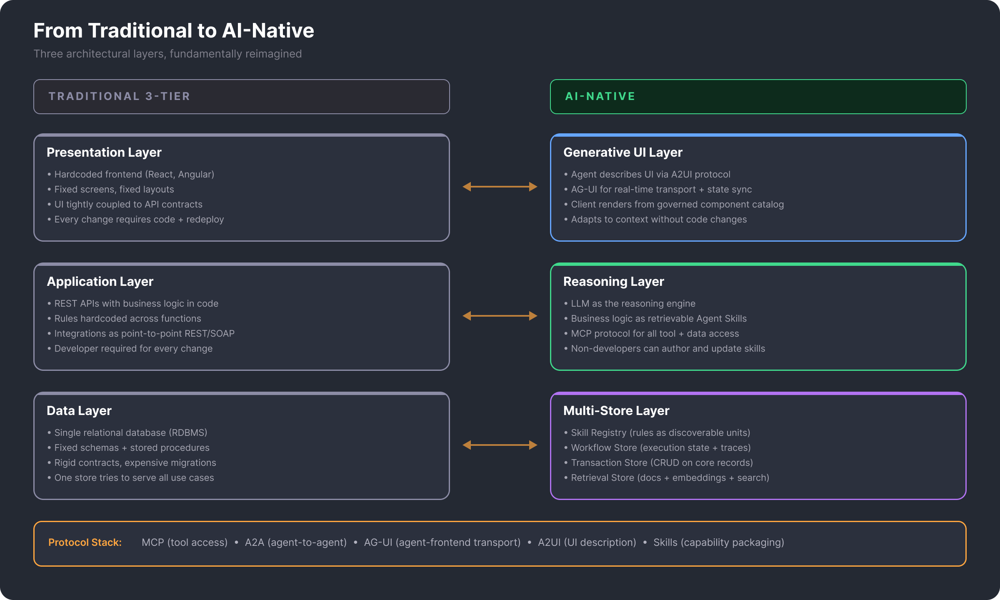
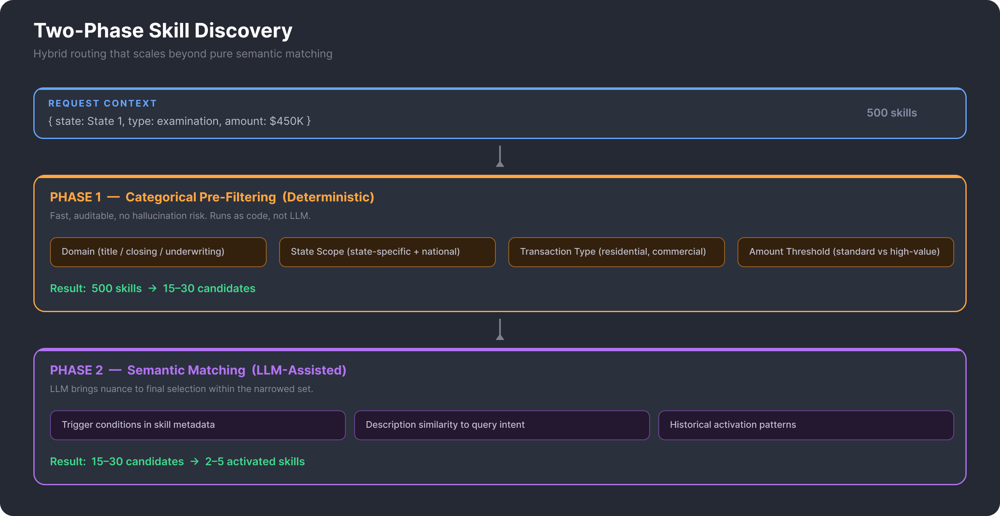
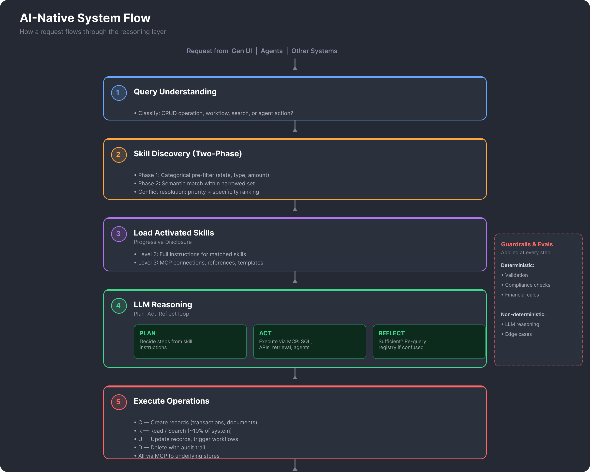
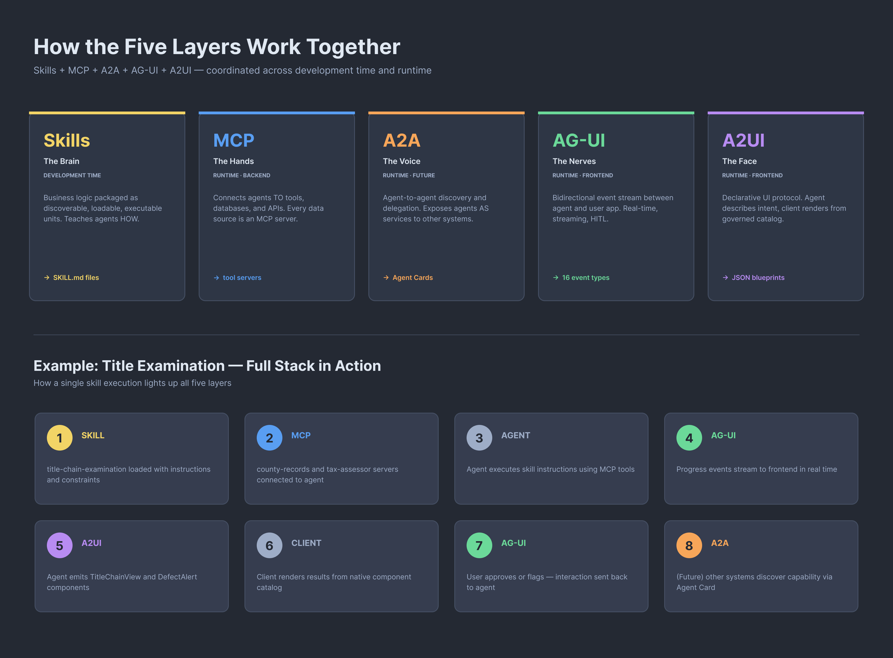
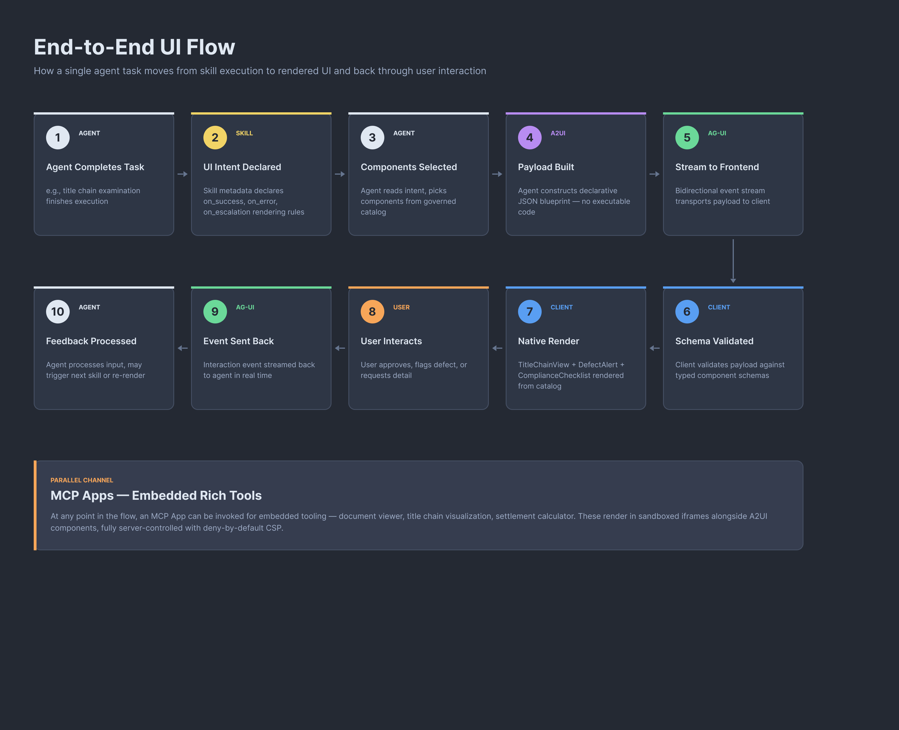

Overview
For the last fifteen years, most enterprise applications have followed the same recipe: a hardcoded frontend talks to a REST API, the API runs business logic written in code, and the code reads and writes to a relational database. Every change — a new screen, a new rule, a new integration — requires developer time and a redeployment. This model served the industry well, but it was built for a world where software rules were rigid, deterministic, and updated quarterly.
An AI-native enterprise application inverts that model. The LLM becomes the reasoning engine, business logic lives as retrievable knowledge rather than hardcoded functions, every integration speaks a standard protocol, and the user interface is generated by the agent itself from a governed catalog of components. The result is a system where non-developers can change application behavior, where new capabilities compose instead of requiring rewrites, and where the line between "application" and "knowledge base" fades away.
This article walks through what that looks like in practice — the architectural shift, the protocol stack that makes it possible in 2026, and an illustrative example from a regulated enterprise domain.
From Traditional to AI-Native: The Architectural Shift
Before diving into the specifics, it helps to see the shift visually. Every layer of the traditional 3-tier application has a direct AI-native counterpart — and in each case, the new layer is more flexible, more composable, and less tied to developer time.

Presentation → Generative UI
The traditional frontend is hardcoded. Developers write screens, layouts, and components, and every variation in user context — a new role, a new workflow state, a new jurisdiction — adds more code. In the AI-native model, the agent describes what it wants to present using A2UI, a declarative protocol. The client renders from a governed catalog of pre-approved components. AG-UI is the real-time transport that streams agent decisions and user interactions between the two sides. The frontend stops being a fixed application and becomes a rendering surface for agent intent.
Application → Reasoning Layer
The traditional backend holds business logic in code: conditionals, rules engines, orchestration. In the AI-native model, business logic moves out of code and into Agent Skills — structured natural language definitions with metadata, instructions, and dependencies. The LLM discovers which skills apply to a given context, loads them on demand, and executes them. Every tool or data source the agent needs is exposed through MCP (Model Context Protocol), which means integrations are no longer point-to-point REST calls hardcoded into services.
Data → Multi-Store Layer
The traditional database tries to serve every purpose with one schema. The AI-native model splits it into purpose-specific stores: a Skill Registry for the rules themselves, a Workflow Store for execution state and audit trails, a Transaction Store for the core CRUD data, and a Retrieval Store for documents, embeddings, and search. Each store is optimized for its use case, and everything is accessed through MCP so agents can query any of them uniformly.
Why 2026 Makes This Practical
The building blocks have existed individually for a while, but 2026 is the year the protocol stack converged. MCP is production-ready and widely adopted. A2A (agent-to-agent communication) is a Linux Foundation standard with 150+ partners. AG-UI is backed by Microsoft, Oracle, Google, and AWS. A2UI is Google-led and approaching v1.0. Agent Skills have become an open standard adopted by every major coding agent. Before this convergence, building an AI-native application meant inventing most of the infrastructure yourself. Now the layers are standardized.
The Example: A Title Insurance & Closing Platform
The rest of this article walks through the architecture using a single concrete example: the modernization of a title insurance and closing platform. This domain was chosen because it stress-tests the pattern in ways that most applications do not. It is large-scale (~800 TB of transaction records), heavily regulated (RESPA, TRID, state-specific rules that change frequently), document-intensive (deeds, liens, easements, commitments, closing packages), and involves multi-party workflows that span weeks or months (buyer, seller, lender, title agent, attorneys, county recorder).
The legacy system looks familiar: a decades-old monolith with thick API layers, business rules hardcoded across hundreds of functions, manual examination workflows, and jurisdiction-specific compliance logic embedded throughout the codebase. Every new state regulation, every new transaction type, every new document format requires developer time.
The modernization follows a Strangler Fig pattern: the existing APIs continue operating while AI-native microservices are built in parallel to progressively replace them. The rest of this article describes what those AI-native services look like, how they compose, and how the protocol stack holds it all together.
A note on generality. While the examples throughout are drawn from title insurance, the architecture is domain-agnostic. The same pattern applies to any enterprise domain that is regulated, document-heavy, workflow-driven, and where business rules change faster than developers can ship code.
The Core Idea
Business Logic as Agent Skills
In a traditional system, 5 business rules = 5 hardcoded functions. In this architecture, business rules and workflows are packaged as Agent Skills — structured natural language definitions with metadata, trigger conditions, step-by-step execution instructions, and declared dependencies.
This maps to the recognized patterns: Retrieval-Augmented Business Logic (academic), Cognitive Automation (industry), and the Agent Skills open standard (agentskills.io, adopted by Claude Code, OpenAI Codex, Cursor, GitHub Copilot, and 30+ tools since Oct 2025). The key insight: skills are not just "documents to retrieve" — they are executable units with enough structure for an LLM to discover, load, and execute them correctly.
A title insurance business rule, expressed as a skill:
AI-Native, Not AI-Augmented
The LLM is the core reasoning engine, not an add-on. It plans which business rules (skills) apply, executes multi-step workflows, and self-corrects when results are ambiguous. Deterministic guardrails validate every step before anything is committed. This is the Neuro-Symbolic Hybrid Architecture — LLM reasoning + symbolic verification.
MCP as the Universal Protocol
Every data source and system integration speaks MCP. Legacy databases (SQL Server), document stores, external APIs, and agent tools are all wrapped as MCP servers with dynamic discovery. The system is federated and composable by design.
Generative UI as the Presentation Layer
The front end is not a traditional hardcoded application. The agent decides what to present based on context — transaction type, user role, workflow state, jurisdiction — and describes the UI declaratively using the A2UI protocol. The client application renders from a governed catalog of pre-approved components. No arbitrary HTML or JavaScript is injected — the agent speaks intent, the client renders safely.
This completes the AI-native stack: the agent reasons with Skills, connects with MCP, communicates with A2A, and presents with A2UI. Every layer is agent-driven, every layer has governance boundaries.
Agent Skills Architecture
Progressive Disclosure — The Core Pattern
At ~800 TB scale with potentially hundreds of business rules, you cannot load everything into an LLM's context window. Progressive disclosure solves this with three-level loading:
Level 1 — Discovery
- Skill name + description + triggers
- With 500 business rules: ~50K tokens
- Agent knows what's available without loading details
- Semantic + categorical matching for selection
Level 2 — Instructions
- Full step-by-step execution instructions
- Constraints, edge cases, examples
- Only the matched skill loads, not all 500
- Recommended: <5000 tokens per skill
Level 3 — Resources
- MCP server connections to data sources
- Reference documents, templates, schemas
- Scripts for deterministic operations
- Loaded only when the agent's reasoning requires them
The Knowledge Store Becomes a Skill Registry
Business rules live in a Skill Registry — a governed, discoverable, version-controlled collection of agent skills organized by domain:
Skill Discovery at Scale
Pure semantic matching ("find the skill whose description best matches this query") works at 10-50 skills. At 500+ business rules, it breaks down due to semantic confusion — research shows agent performance degrades sharply when skill selection exceeds 50-100 options. The solution is hybrid routing:
Two-Phase Discovery

This hybrid approach keeps deterministic control over the first pass (fast, auditable, no hallucination risk) while leveraging LLM understanding for nuanced final selection.
Skill Metadata for Routing
Each skill declares routing-relevant metadata in its frontmatter. This is what the categorical pre-filter operates on:
Cross-Skill Conflict Resolution
When multiple skills match a context (e.g., a state-specific high-value commercial transaction triggers both "state-specific-requirements" AND "high-value-transaction-rules" AND "commercial-underwriting"), the system needs deterministic precedence. This is especially critical in a regulated industry where conflicting rules could produce compliance violations.
Resolution Strategy
- Explicit Priority — Each skill declares a numeric priority in metadata. Higher priority wins when skills conflict. Compliance skills always have highest priority.
- Specificity Ranking — More specific skills take precedence over general ones. A state-specific title examination rule overrides a national default. Specificity is determined by: state-scoped > national, transaction-type-scoped > general, amount-threshold-scoped > all.
- Composability by Default — Most skills are not in conflict — they compose. The title chain examination skill AND the state-specific requirements skill both activate and their instructions merge. Conflict only applies when skills produce contradictory instructions.
- Explicit Conflict Declaration — Skills can declare
conflicts-within metadata, explicitly naming skills that cannot co-activate. When detected, the higher-priority skill wins. - Human Escalation — Unresolvable conflicts (equal priority, no explicit declaration) escalate to a human reviewer. In a regulated domain, this is a feature, not a bug.
Skill Governance & Lifecycle
Skills degrade exactly like documentation — they start clean and become stale. In a regulated domain like title insurance, stale business rules are a compliance liability. The architecture requires a formal skill lifecycle:
Versioning
Every skill has a semantic version. Changes go through review before activation. Previous versions are retained for audit trails. Rollback is instant.
Ownership
Each skill has a declared owner (team or individual). Owners are accountable for accuracy, updates, and deprecation decisions.
Testing
Each skill includes test cases: given this context, the agent should produce this outcome. Tests run on every skill change and on a scheduled cadence.
Deprecation
Skills have lifecycle states: draft → active → deprecated → retired. Deprecated skills emit warnings. Retired skills are removed from the registry.
Freshness Monitoring
Automated checks for skill rot: skills not updated in N months, skills with failing tests, skills referencing deprecated MCP servers or removed data sources.
Approval Workflow
Skill changes in regulated categories (compliance, underwriting) require multi-party approval before going active. Changes in lower-risk categories can self-serve with review.
Skill Testing
Each skill in the registry includes a tests/ directory with scenario-based test cases. A test case is a structured definition of: input context, expected skill activation, expected agent behavior, and pass/fail criteria.
Architecture
Multi-Store Design
The system does not have "a database." It has purpose-specific stores, each serving a different role:
Skill Registry (was: Knowledge Store)
Business rules as Agent Skills with progressive disclosure. The LLM discovers, loads, and executes these to know what to do. Version-controlled, governed, testable.
Workflow Store
Execution state, agent traces, step-by-step audit trails. Tracks how things are being done. Skill activation logs, conflict resolution records.
Transaction Store
Title records, closing data, CRUD operations (SQL Server). The actual enterprise data being operated on.
Retrieval Store
Indexed documents, embeddings, search indexes. Supports the search use case (~10% of system).
External Sources
Web, other systems via MCP, APIs. Additional context when the LLM needs more information to reason.
System Flow

Three-Tier Delegation Model
Inspired by production patterns in Claude Code, the Claude Agent SDK, and enterprise multi-agent frameworks (LangGraph, Semantic Kernel), the system uses three tiers of delegation. Each tier trades token cost for coordination capability:
Tier 1: Atomic Tools (MCP)
- Database queries (SQL Server)
- Document retrieval & storage
- API calls to external systems
- Financial calculations
- Schema validation
Every tool is an MCP server with typed inputs/outputs and permission rules.
Tier 2: Specialized Agents (Subagents)
- Title Examination Agent (skills: chain exam, defect ID)
- Closing Agent (skills: coordination, disbursement)
- Underwriting Agent (skills: risk scoring, exceptions)
- Document Processing Agent (skills: extraction, classification)
- Compliance Agent (skills: RESPA/TRID, state regs)
Each agent runs in its own context with only the skills and tools it needs. Cannot spawn other agents (prevents runaway delegation).
Tier 3: Orchestrated Workflows
- End-to-end closing process (title + closing + compliance + lender)
- Complex underwriting with multiple agent consultations
- Exception resolution requiring human-in-the-loop
The orchestrator delegates to Tier 2 agents, tracks workflow state, handles inter-agent dependencies, and enforces the trust boundary at every step.
Delegation Constraint: No Recursive Spawning
A deliberate design constraint: Tier 2 agents cannot spawn other Tier 2 agents. This is borrowed from Claude Code's architecture and prevents runaway delegation chains that are impossible to debug or audit. If a title examination agent needs underwriting input, it returns a result to the orchestrator, which then separately delegates to the underwriting agent. The orchestrator always maintains the full picture.
Agent Protocol Stack
The 2026 agent ecosystem has converged on five complementary layers. This architecture adopts all five at different maturity levels:
How the Five Layers Work Together

A2A: Why Defer, What to Borrow Now
A2A (Agent-to-Agent Protocol) is the right standard for inter-agent communication, but v1.0 is not yet finalized. For internal orchestration, MCP + the workflow engine (PAR loop) is simpler and more mature. However, the Agent Card schema is worth borrowing today as the format for the internal agent registry:
When A2A v1.0 ships, these internal cards can be exposed at /.well-known/agent-card.json endpoints to enable cross-business-unit or external agent discovery with minimal migration effort.
Trust Boundary: Deterministic vs. Non-Deterministic
The system uses a Neuro-Symbolic Hybrid approach. Not everything is LLM-driven. The architecture defines a clear trust boundary:
Non-Deterministic (LLM)
The LLM handles reasoning, planning, and ambiguity:
- Discovering and selecting relevant skills
- Reasoning over loaded skill instructions
- Planning multi-step execution sequences
- Handling edge cases and ambiguity
- Deciding when to re-query for more context
- Generating responses and action plans
Deterministic (Code/Rules)
Hard verification at every step:
- Categorical skill pre-filtering
- Skill conflict resolution (priority + specificity)
- Data format & schema validation
- Financial calculations
- Compliance checks (RESPA, TRID)
- Permission & access control
- Audit logging & traceability
Generative UI Layer
The presentation layer follows the same AI-native principle as every other layer: the agent drives the experience. Instead of developers building static pages for every workflow permutation, agents describe what to present using the A2UI protocol, and the client renders from a governed component catalog. The transport between agent and frontend is AG-UI — a bidirectional event protocol for real-time state sync, streaming, and human-in-the-loop handoffs.
Three UI Surface Types
Not every interaction in the platform has the same UI requirements. The architecture defines three distinct surface types, each served by a different protocol:
Dynamic Content Views (A2UI)
- Title status dashboards that adapt to transaction type
- Agent-generated forms with fields determined by jurisdiction and deal structure
- Closing checklists that reorder and expand based on workflow state
- Search results rendered as cards, tables, or summaries based on query intent
The agent sends declarative JSON blueprints. The client maps them to pre-approved native components. No executable code crosses the boundary.
Stateful Workflows (AG-UI)
- Title examination flow where agent and examiner collaborate step-by-step
- Live closing coordination with multi-party status updates
- Exception resolution requiring human approval before agent proceeds
- Underwriting review with agent recommendations and examiner overrides
AG-UI streams ~16 event types between agent and frontend. Cancel, resume, and state rollback are built into the protocol.
Embedded Rich Tools (MCP Apps)
- Title chain visualization spanning 60+ years of ownership
- Document viewer with AI-annotated highlights and extraction markers
- County record browser with map integration
- Financial settlement calculator with real-time proration
MCP servers provide pre-built HTML/JS via ui:// resources. The host renders them in sandboxed iframes with deny-by-default CSP. Full control stays with the server.
Component Catalog
A2UI is declarative — the agent can only request components that exist in the client's pre-approved catalog. This is the UI equivalent of the skill registry: governed, versioned, and auditable. The agent cannot invent new components at runtime.
Each component in the catalog has a typed schema defining its props, validation rules, and accessibility requirements. The agent populates the schema; the client enforces rendering constraints. New components go through the same governance process as new skills — review, approval, and testing before activation.
UI Skill Pattern
Skills are not just backend operations. A skill can declare its UI rendering intent — what the agent should present when the skill completes. This connects the skill architecture to the presentation layer naturally:
The skill does not contain any rendering logic. It declares intent — which components, under which conditions. The agent reads this intent, constructs the A2UI payload, and AG-UI delivers it to the frontend. Separation of concerns is preserved across every boundary.
Deterministic vs. Non-Deterministic in the UI
The neuro-symbolic trust boundary extends to the presentation layer. The agent has creative latitude in composition, but hard constraints govern what can actually render:
Non-Deterministic (Agent Decides)
The agent controls the dynamic aspects of the UI:
- Which components to render based on context
- Layout composition and ordering of components
- Data selection — what information surfaces first
- Conditional display logic (defect alerts, escalation cards)
- Adaptive density — summary vs. detail based on user role
Deterministic (Client Enforces)
Hard constraints at the rendering boundary:
- Component catalog is fixed — agent cannot invent new components
- Prop validation — typed schemas enforced before rendering
- Compliance-required fields are always present (cannot be omitted)
- PII masking applied at the rendering layer, not the agent
- Accessibility (WCAG) enforced by the component implementation
- Audit log of every A2UI payload — what was requested, what was rendered
End-to-End UI Flow

Adaptive UI by Context
The same agent task renders differently based on transaction context. Skill metadata — the same fields used for skill discovery (state-scope, transaction-type, amount-threshold) — drives UI adaptation:
The agent does not contain layout logic per state or transaction type. It reads the skill metadata, evaluates the context, and selects components accordingly. Adding a new state or transaction type means updating skill metadata and component props — not rebuilding the frontend.
Modernization Approach
Strangler Fig Pattern
The legacy monolith has thick API layers handling multiple operations per endpoint. The modernization:
- Decompose — Break monolithic APIs into microservices with clear domain boundaries. Each domain maps to a set of skills.
- Parallel Build — Existing APIs continue operating. AI-native replacements (skill-driven agents) are built alongside, not as a big-bang rewrite
- Shadow Validate — New services run in shadow mode, comparing outputs against legacy for correctness. Skill test cases validate behavioral equivalence.
- Gradual Cutover — Traffic shifts incrementally to AI-native services as they prove themselves
Migration = Skill Extraction
Each legacy module maps to one or more skills. The migration process for each module is:
- Extract — Document the module's business logic as natural language skill definitions
- Test — Create test cases that capture the module's current behavior
- Connect — Wrap the module's data sources as MCP servers
- Validate — Shadow-run the skill-driven agent against the legacy module, compare outputs
- Cut Over — When test pass rate meets threshold, shift traffic to the AI-native path
Why This Is 2026-Grade Architecture
AI-Native, Not AI-Augmented
The LLM is the reasoning engine, not a feature. Business logic is packaged as agent skills — retrieved, loaded, and executed at runtime.
Agent Skills Standard
Business rules follow the open Agent Skills pattern (agentskills.io). Progressive disclosure, version-controlled, testable, portable across agent runtimes.
MCP-First Federation
Every data source is a self-describing MCP server with dynamic discovery. The system is composable by design.
Full CRUD, Not Just Search
Agents create, read, update, and delete records with guardrailed autonomy. Search is ~10% of the capability.
Neuro-Symbolic Hybrid
LLM reasoning paired with deterministic verification. Every action passes through a trust boundary before execution.
Five-Layer Protocol Stack
Skills (brain) + MCP (hands) + A2A (voice) + AG-UI (nervous system) + A2UI (face). Full coverage from reasoning to presentation, aligned with the 2026 industry standard.
~800 TB Scale
Metadata-first routing, tiered storage, hybrid skill discovery, and adaptive retrieval strategies. No flat vector search at this scale.
Zero-Downtime Migration
Strangler Fig with shadow validation. Legacy APIs keep running while skill-driven agents prove themselves. Migration = skill extraction.
Search & Retrieval (One Capability)
Search is the "Read" in CRUD — approximately 10% of the system's scope. But it is the most visible capability and worth detailing:
- Metadata-First Routing — Queries are scoped by transaction metadata before any semantic search runs (critical at 800 TB)
- Three-Way Hybrid Retrieval — Dense vectors + sparse/BM25 + full-text search with Reciprocal Rank Fusion
- Cross-Encoder Reranking — ColBERT-style late interaction scoring for precision
- Self-Correcting Retrieval — Evaluation agent scores results; below-threshold triggers query refinement and re-retrieval
- Multimodal — Scanned documents via late-interaction visual retrieval (no OCR dependency)
- Adaptive Strategy — Router selects retrieval approach per query type (factual, analytical, multi-hop, summarization)
Data Ingestion Pipeline
- Near-Real-Time — Adaptive ingestion pipeline, not batch ETL. Adjustable as data formats evolve
- Agentic Chunking — LLM-driven segmentation that adjusts granularity by content type
- Contextual Embeddings — Each chunk enriched with document-level context before indexing
- Tiered Storage — Hot (active transactions) → Warm (recent archives, metadata-indexed) → Cold (bulk, on-demand indexing)
- Incremental Indexing — Data moves between tiers as access patterns change
The Bigger Picture
AI-native is not a feature. It is a different way of building software where the boundaries between user interface, application code, and data start to dissolve. The UI is generated from agent intent. The application logic is retrieved from a knowledge store instead of compiled from code. The data layer is not one database but several purpose-built stores that all speak the same protocol. And the glue that holds it together is not REST endpoints but a standardized protocol stack that the industry converged on in 2026.
The shift is not about replacing every traditional system tomorrow. It is about recognizing that the default architecture for new enterprise applications is changing, and that the pattern now has enough maturity — real standards, real tools, real production usage — to be taken seriously. For domains where business rules change faster than developers can ship code, where compliance is non-negotiable, and where scale makes manual processes impossible, AI-native is no longer an experiment. It is the architecture worth building toward.